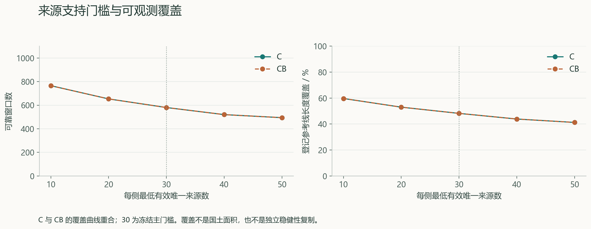
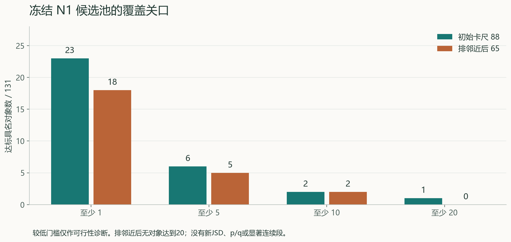
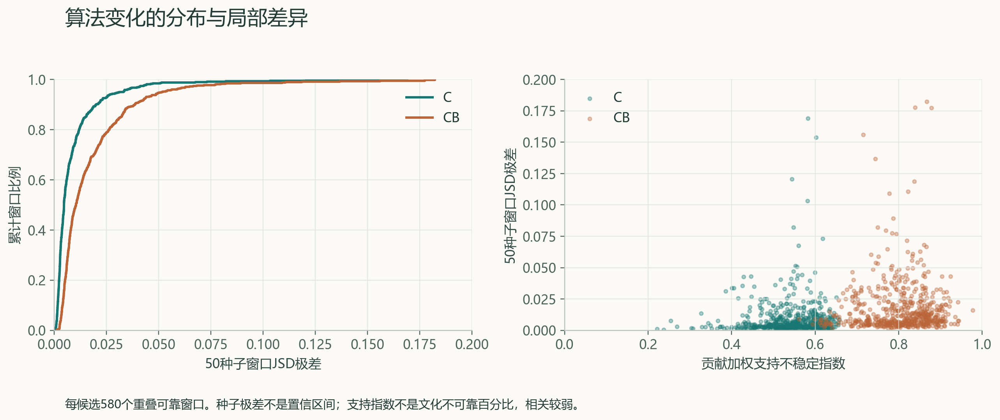
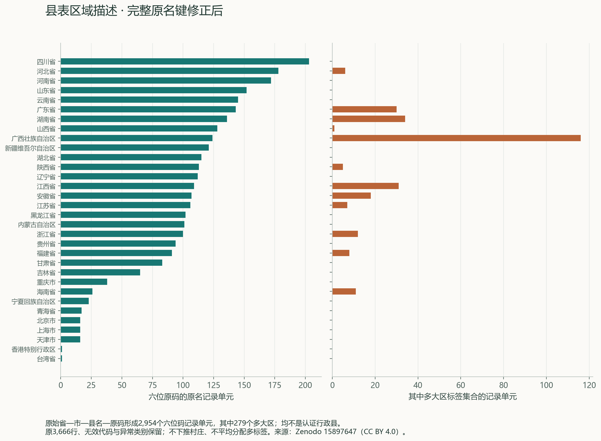

贡献分解与机制对照
类别贡献加回总 JSD；同支持下的原身份与聚合差异、社区内部损失均可追溯。
1.22 × 10−1512 个窗口独立重算最大误差数学成立不证明文化真实性；聚合效果不能直接归功于 CLQ 筛边。
01 / 结果浏览
主组成 A_nonisolated + exclude。
JSD 以 2 为底，不取根、不加伪计数；不合格结果保留 NA。
实线为冻结社区 JSD；浅色范围是 50 个优化种子的最小—最大值，属于算法变化范围。
不合格窗口和路径分支处断开；不会把 NA 填成 0。横坐标为各路径的参考里程，不代表真实交通路线。
| 山脉 | 覆盖加权 JSD | 可靠窗口 | 线长覆盖 | 状态 |
|---|
02 / 证据关口
工程验收与科学支持分别记录。
反向结果、零资格和未执行项目同样公开。
类别贡献加回总 JSD；同支持下的原身份与聚合差异、社区内部损失均可追溯。
1.22 × 10−1512 个窗口独立重算最大误差数学成立不证明文化真实性；聚合效果不能直接归功于 CLQ 筛边。
N0 可比 78 对象中，C 有 43、CB 有 45 的背景差为负。条件基准尚未完成。
88 → 65N1 卡尺候选 → 排邻近后保留保留池无对象达到 20 候选；共享来源图不是独立性检验。
120 条双人编码材料已备，两张表仍未填写；新方言资料目前用于适尺度探索。
0 / 0已完成人工编码 / 合格确认窗口零资格不等于零语言差异。全国地形目前只有三个试点。
Astra 对前版作出“有条件通过”；最新县表等局部修正由 Sol 完成并验收。未声称再次 Astra 批准、导师认可或研究闭环已经成立。
03 / 图表与资料
图件由已存数值重绘，可下载 PNG、SVG 和 PDF。
没有新增实验，也没有为展示挑选更有利参数。




仅含公开派生成果和文字报告，计算源码与完整复现库由研究者另行管理。
04 / 后续研究
U 为用户明确方向，A 为 Astra 方法细化。
基于可访问记录整理，不等同于全部历史聊天转录。
指定参考线两侧组成描述与因果分隔分开，保留 C / CB 两主候选。
真实编码、独立调查出处、县界位置与代码史，优先补证据。
筛边对照、地形共同支持与联合校准通过后，才考虑正式连续段。